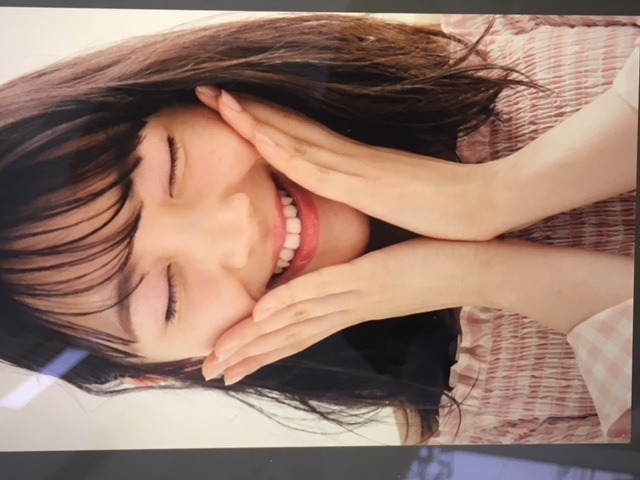
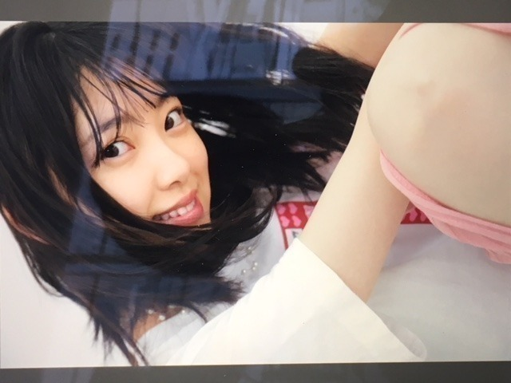
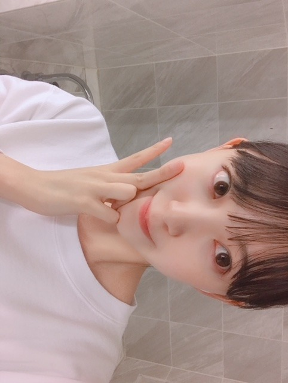
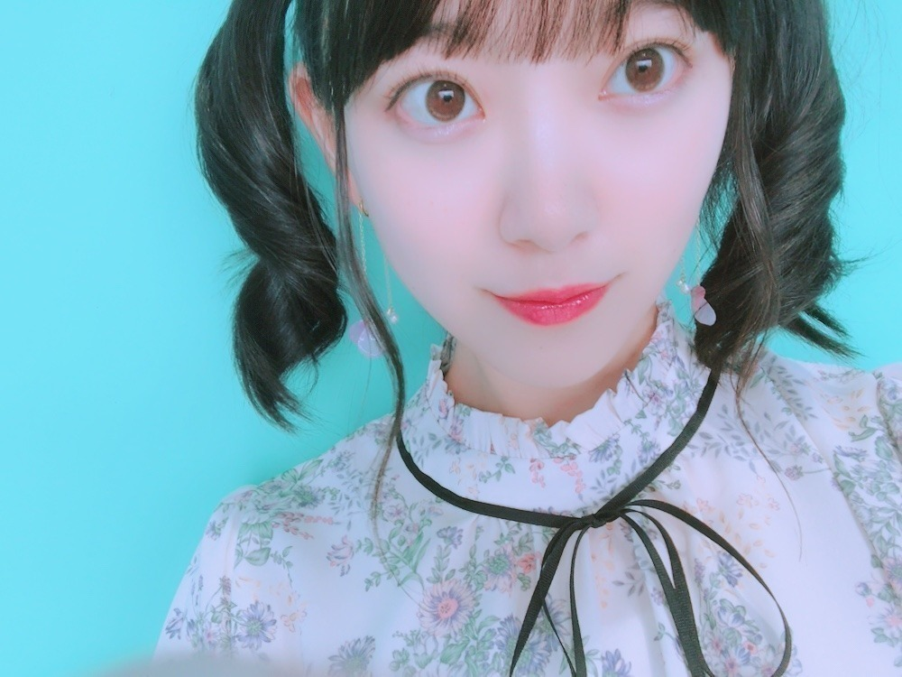

2018/0712Thu近づいてみた
にこ〜( ˆoˆ )


ちらっ^_^
ar発売日です！
アイメイクがかわいいです。
みてねー！

薄メイク。
セブンイレブンさんの台湾ver CMに出させていただいています！
ヒーロー風なCMに注目です！

ついでにロングの時の写真も 。
ロング派ショート派
ありがたい事に髪型についての意見を
日々たくさんいただきます
これからは1つにこだわらず
お仕事で切ったり伸ばしたり染めたり
色々変化もしていくと思います
でも、どんな私もいつも変わらずに
応援してくださる皆さんが大好きです
いつしか日奈子に
未央奈はカメレオンみたいに
いろんな色に染まれるって言われた時、
こんな無色のままでいいのかなって自信を
失いかけてたから少し嬉しかったのを思い出しました
もっと幅広く色んな経験をして
あらゆる色に染まりたいなぁって思います
どんな私も
私であることに変わりはない。
桜の木も花が咲いたと思ったら
緑の葉だけになったり、
冬には花も葉も無いから見た目は乏しく淋しく見えるかもしれないけど樹木自体はしっかりとぶれずにそこにあって...花が咲く春に備えていて。
見え方はその都度違えど桜の木は常に
存在して四季を通していろんな形で人々を魅了していますよね
すごいなぁ
私も芯のあるブレない人になりたいです
o(･x･)/
頑張ろう
前進 積み重ね あるのみ。だね。
そういえば、
とうもろこしと桃が大好きなんですけど
とうもろこしと桃が美味しいところってどこなんだろう？
山梨？新潟？うーん
知りたい...
では。
2018/07/12 12:42
コメント(592)
ar見たよ！可愛い！
更新ありがとう！
家でとうもろこし作ってるから、名産とか考えた事無くてごめん！
今の季節、焼きもろこし！ ググってみてね！桃は、山梨とか長野県の下伊那。岐阜の隣だよ！
めざましで、たまたま自転車で移動中のシーンがあって、会場に入る所の少し下る所の風によっての表情や髪型が自然体で可愛かったです！ 乃木坂は、色々な経験を積んで来てるから、なぜかTHE自然体が良いなーなんて思っています。自然体な笑顔がかわいいじゃん！
かわいい写真ありがとう。堀ちゃんの考えを尊重しながら応援してます！
ツアー暑さに負けないでね！
応援してます！
家でとうもろこし作ってるから、名産とか考えた事無くてごめん！
今の季節、焼きもろこし！ ググってみてね！桃は、山梨とか長野県の下伊那。岐阜の隣だよ！
めざましで、たまたま自転車で移動中のシーンがあって、会場に入る所の少し下る所の風によっての表情や髪型が自然体で可愛かったです！ 乃木坂は、色々な経験を積んで来てるから、なぜかTHE自然体が良いなーなんて思っています。自然体な笑顔がかわいいじゃん！
かわいい写真ありがとう。堀ちゃんの考えを尊重しながら応援してます！
ツアー暑さに負けないでね！
応援してます！
今回のブログの文章も素晴らしいです。カメレオンアイドルまさに大和撫子七変化ですね、桜の木の話も、まったく、そのとおりだと思いました。堀さんは詩人です。堀さんが、作詞をすれば、きっと名曲が生まれるはずです。あと堀さんの話を、もっと長く聞いていたいです。堀さんの講演会トークショウ行ってみたいです。堀さんは芯がありますよね、ちなみに伝説のロック歌手忌野清志郎の歌でＨＢ2Ｂ2Ｈって言う、えんぴつの芯と堀さんの言ってる心の芯を、かけた、面白い曲があるので、気が向いたら聞いてみてほしいです。
堀さんは天才だと僕は思ってます。
堀さんは天才だと僕は思ってます。
やっぽー。セブンやよ(ฅ'ω'ฅ)♪
なんでだろう？ぶつかったりつまずいたり、おっちょこちょいな未央奈が簡単に想像できる 笑
そんなことあってもずっと笑ってそう 笑
笑うって大事だよね
辛いことでも笑い飛ばせば辛くなくなるもん
未央奈の笑顔と笑い声めっちゃ好きだよ(^-^)
蚊に刺されすぎでしょ！
どんだけ美味い血してんの？！
うー見てるだけで痒なるわ(＞＜)
虫除け塗ってください！
では、今日も暑いけど1日楽しもうねd(@^∇ﾟ)/ﾌｧｲﾄｯ♪
o(ﾟ▽＾)ﾉｼまたねぃ♪
なんでだろう？ぶつかったりつまずいたり、おっちょこちょいな未央奈が簡単に想像できる 笑
そんなことあってもずっと笑ってそう 笑
笑うって大事だよね
辛いことでも笑い飛ばせば辛くなくなるもん
未央奈の笑顔と笑い声めっちゃ好きだよ(^-^)
蚊に刺されすぎでしょ！
どんだけ美味い血してんの？！
うー見てるだけで痒なるわ(＞＜)
虫除け塗ってください！
では、今日も暑いけど1日楽しもうねd(@^∇ﾟ)/ﾌｧｲﾄｯ♪
o(ﾟ▽＾)ﾉｼまたねぃ♪
お疲れさま。
桃は和歌山にもあるよ。
地名がそのものの桃山とか、場所でいったら桃源郷ってところとか。
今の時期、桃を買いに行く人、多いよ。
桃はお盆までかな。
和歌山は他にもこれから、イチゴ(まりひめって品種)、柿、みかんとか意外とフルーツが多い県かも。
花粉症に効果があるっていう柑橘系のじゃばらも。
海も川も山もあるよ(いなかってことかも)。
全ツ大阪の時にでも、来てみて。
桃は和歌山にもあるよ。
地名がそのものの桃山とか、場所でいったら桃源郷ってところとか。
今の時期、桃を買いに行く人、多いよ。
桃はお盆までかな。
和歌山は他にもこれから、イチゴ(まりひめって品種)、柿、みかんとか意外とフルーツが多い県かも。
花粉症に効果があるっていう柑橘系のじゃばらも。
海も川も山もあるよ(いなかってことかも)。
全ツ大阪の時にでも、来てみて。
ほりっぴ～、ナンチです♪
博多出張から帰ってきました
おいしいものたくさん食べれて幸せでした
あまおう入りのわらび餅がおすすめ
お土産は明太子
とうもろこしといえば、山梨のゴールドラッシュ？名前違ったかな？が甘くておいしい～
博多出張から帰ってきました
おいしいものたくさん食べれて幸せでした
あまおう入りのわらび餅がおすすめ
お土産は明太子
とうもろこしといえば、山梨のゴールドラッシュ？名前違ったかな？が甘くておいしい～
好きだぁぁぁ
未央奈ー、ブログ更新ありがとう！
ブログへのコメント遅れちゃってごめんね…
バスラ2日目と3日目行ったよ！相変わらず可愛くて…
「あの教室」での飛鳥との絡み、特に可愛かった！
コールしまくって、喉痛くなっちゃったけど、とにかくライブから1週間経った今でも余韻が抜けないよ笑
あ、そうだ、月曜日、幕張に握手会で未央奈レーン行くよ！今月はライブに、個別握手会に。すごい充実してる気がする！
これを楽しみに仕事頑張る！だから未央奈もここ最近暑いし、仕事大変だと思うけど、頑張ってね！！！
ブログへのコメント遅れちゃってごめんね…
バスラ2日目と3日目行ったよ！相変わらず可愛くて…
「あの教室」での飛鳥との絡み、特に可愛かった！
コールしまくって、喉痛くなっちゃったけど、とにかくライブから1週間経った今でも余韻が抜けないよ笑
あ、そうだ、月曜日、幕張に握手会で未央奈レーン行くよ！今月はライブに、個別握手会に。すごい充実してる気がする！
これを楽しみに仕事頑張る！だから未央奈もここ最近暑いし、仕事大変だと思うけど、頑張ってね！！！
乃木坂46メンバーの皆様
さゆりん推しの、空色のコウモリ です(^^)/
遅くなりましたが、三日間に渡った 6th Year Birthday Live の
完走お疲れ様でしたm(_ _)m
私は、7/7の二日目公演を観覧しました(^^)/
『シンクロニシティ・ライブ』という新しい試みを演じ切ろうとする
メンバーの皆様の「不安」と「必死さ」がひしひしと伝わってきて、
そして、楽曲の「新しい可能性」を沢山観ることができて、
今年の夏の最高のスタートを切ることができました(^ω^)b
会場が、ペンライト一色で染まる景色はとても美しかったです((T_T))
二日目公演を観た感想は下記になります (楽曲名は略称で失礼します)
(1)観ることが出来て嬉しかった楽曲
ロマいか、やさしさとは、今誰、逃げ水、My rule、シンクロニシティ
(2)新しい可能性を感じた楽曲
制服のマネキン、命は美しい、インフルエンサー、自惚れビーチ、乃木坂の詩
(3)可能ならば観たかった楽曲
ぐるカー、せっかち、他の星から、嫉妬の権利、孤独な青空、設定温度
--
来週は、福岡で全国ツアーの地方公演が始まりますね!!
酷暑で体調を崩さぬように、そして怪我に注意しながら準備に
取り組んでくださいm(_ _)m
私は、9/2の宮城公演に参加します!!
21stシングル発売を経て、四期生を迎え、開拓を続ける乃木坂46と
未踏の地で再会することを楽しみにしています(≧∇≦)/
では、また時々はコメントしに来ますm(_ _)m
空色のコウモリ☆★☆
.
さゆりん推しの、空色のコウモリ です(^^)/
遅くなりましたが、三日間に渡った 6th Year Birthday Live の
完走お疲れ様でしたm(_ _)m
私は、7/7の二日目公演を観覧しました(^^)/
『シンクロニシティ・ライブ』という新しい試みを演じ切ろうとする
メンバーの皆様の「不安」と「必死さ」がひしひしと伝わってきて、
そして、楽曲の「新しい可能性」を沢山観ることができて、
今年の夏の最高のスタートを切ることができました(^ω^)b
会場が、ペンライト一色で染まる景色はとても美しかったです((T_T))
二日目公演を観た感想は下記になります (楽曲名は略称で失礼します)
(1)観ることが出来て嬉しかった楽曲
ロマいか、やさしさとは、今誰、逃げ水、My rule、シンクロニシティ
(2)新しい可能性を感じた楽曲
制服のマネキン、命は美しい、インフルエンサー、自惚れビーチ、乃木坂の詩
(3)可能ならば観たかった楽曲
ぐるカー、せっかち、他の星から、嫉妬の権利、孤独な青空、設定温度
--
来週は、福岡で全国ツアーの地方公演が始まりますね!!
酷暑で体調を崩さぬように、そして怪我に注意しながら準備に
取り組んでくださいm(_ _)m
私は、9/2の宮城公演に参加します!!
21stシングル発売を経て、四期生を迎え、開拓を続ける乃木坂46と
未踏の地で再会することを楽しみにしています(≧∇≦)/
では、また時々はコメントしに来ますm(_ _)m
空色のコウモリ☆★☆
.
みおたん、お疲れ様です！
また、みおたんにやられました！
破壊力バツグンのウィンク！
一発でやられました！
おまけに、プク顔！
みおたん、半端ないって！
笑顔でウィンクなんて、歌ってる最中に、
普通できひんやん！
ウィンクの後のプク顔も普通できひんやん！
トドメを刺すなんて、みおたん、半端ないって！
今自分は重体中です！笑笑
ジコチュウ、ベッドの上でリピート中です！
みおたんに何回ノックアウトをくらうか？
楽しみです！
暑いから熱中症に気をつけてね！
今年は甘いスイカしか食べた事ないな！
暑くても良い事あるね！スイカが甘い！
それでは健康第一で！
信州のミッキイでした！
また、みおたんにやられました！
破壊力バツグンのウィンク！
一発でやられました！
おまけに、プク顔！
みおたん、半端ないって！
笑顔でウィンクなんて、歌ってる最中に、
普通できひんやん！
ウィンクの後のプク顔も普通できひんやん！
トドメを刺すなんて、みおたん、半端ないって！
今自分は重体中です！笑笑
ジコチュウ、ベッドの上でリピート中です！
みおたんに何回ノックアウトをくらうか？
楽しみです！
暑いから熱中症に気をつけてね！
今年は甘いスイカしか食べた事ないな！
暑くても良い事あるね！スイカが甘い！
それでは健康第一で！
信州のミッキイでした！
みおなー♡推してる♡めっちゃかわいい
arみたよー！
かわいい♡
音楽の日すっっっごいよかった！
かわいい♡
音楽の日すっっっごいよかった！
未央奈ちゃん音楽の日お疲れ様
ジコチューで行こう！とインフルエンサーよかったよ
気をつけて帰ってね
斉藤貴巳
ジコチューで行こう！とインフルエンサーよかったよ
気をつけて帰ってね
斉藤貴巳
未央奈！(*´꒳`*)
少し間が空きましたが、ブログコメントの続きを書きまーす！！
桜に、良い在り方と言うものを感じたのですね。(*´-`)確かにね、満開の桜は勿論素敵で、葉桜となってからもみずみずしい緑の葉が美しいです。黒くて太い幹は力強く、雪が降ったなら白と黒のコントラストがとても綺麗で。(*´꒳`*)
また木々はどんな風の日も嵐の日も変わらず立っていて、多少枝が折れたり、動物に食べられてもビクともしない。本当に強いですよね、まだ芽の時なんてちょっと踏んだだけで潰れるのに、風雨に耐えた木の幹は私が全力で叩いたって私が怪我をするだけ。(>_<) 本当に凄いですよねー。
人も…後、未央奈たちアイドルも同じ生き物なのだから在り方も同じなのかもしれませんね。
確かに桜の花は目立つし、美しいけれども桜の魅力は花だけにある訳ではなくて。
桜の花が散る様子ですら美しいのに、散った後ですら道や川をピンクに染めて残る。
そして少し休んで春また花が咲きます。
初めはすぐ折れてしまいそうな小さな芽だった筈なのに風雨に耐え、冬を越え、気づいたら大きく強く成長してて。
未央奈も本当に大きくなったと感じますし、さらにまた1年1年、耐えて咲かせて大きくなっていけると思うよ！！頑張れっ(*´-`)
私は武道が好きだったりするのですが、武術なんかも動物にヒントを得て作られたりしてるものもたくさんあるんだ〜。^ ^
未央奈ま良い先生を見つけたんじゃないですか？(>_<)自然から生き方を学ぶのは、昔の人達もやっていた例は多いですからね！！
笑(*´-`)
とうもろこしと桃、きっと既に他のコメントで紹介されてるだろうからちょい変わり種を。
ももの桃山 桃ゆめ
フロム蔵王 桃のレアチーズケーキ
みれい菓 りんごと桃のカタラーナ
上、桃のスイーツだよー。お取り寄せできる奴。どうかな？？？お気に召すでしょうか？？(*´꒳`*)
じゃあまたね！未央奈〜♬
少し間が空きましたが、ブログコメントの続きを書きまーす！！
桜に、良い在り方と言うものを感じたのですね。(*´-`)確かにね、満開の桜は勿論素敵で、葉桜となってからもみずみずしい緑の葉が美しいです。黒くて太い幹は力強く、雪が降ったなら白と黒のコントラストがとても綺麗で。(*´꒳`*)
また木々はどんな風の日も嵐の日も変わらず立っていて、多少枝が折れたり、動物に食べられてもビクともしない。本当に強いですよね、まだ芽の時なんてちょっと踏んだだけで潰れるのに、風雨に耐えた木の幹は私が全力で叩いたって私が怪我をするだけ。(>_<) 本当に凄いですよねー。
人も…後、未央奈たちアイドルも同じ生き物なのだから在り方も同じなのかもしれませんね。
確かに桜の花は目立つし、美しいけれども桜の魅力は花だけにある訳ではなくて。
桜の花が散る様子ですら美しいのに、散った後ですら道や川をピンクに染めて残る。
そして少し休んで春また花が咲きます。
初めはすぐ折れてしまいそうな小さな芽だった筈なのに風雨に耐え、冬を越え、気づいたら大きく強く成長してて。
未央奈も本当に大きくなったと感じますし、さらにまた1年1年、耐えて咲かせて大きくなっていけると思うよ！！頑張れっ(*´-`)
私は武道が好きだったりするのですが、武術なんかも動物にヒントを得て作られたりしてるものもたくさんあるんだ〜。^ ^
未央奈ま良い先生を見つけたんじゃないですか？(>_<)自然から生き方を学ぶのは、昔の人達もやっていた例は多いですからね！！
笑(*´-`)
とうもろこしと桃、きっと既に他のコメントで紹介されてるだろうからちょい変わり種を。
ももの桃山 桃ゆめ
フロム蔵王 桃のレアチーズケーキ
みれい菓 りんごと桃のカタラーナ
上、桃のスイーツだよー。お取り寄せできる奴。どうかな？？？お気に召すでしょうか？？(*´꒳`*)
じゃあまたね！未央奈〜♬
未央奈、ブログの更新ありがとう
今週は未央奈が載っている雑誌がar、EX大衆、Platinum FLASHとたくさん発売されたね。
どの雑誌も良かったけど、未央奈と絢音ちゃんが載っていたEX大衆は未央奈と絢音ちゃんの仲の良さがスッゴク伝わってきて良かったな～
ロング派？ショート派？
う～ん、俺は「未央奈派」なので、未央奈が似合う髪形ならどんな髪型でも良いと思うよ。
ちなみに、ロング・ショートの両方とも未央奈は似合っていると思うよ。
俺の両親の趣味が家庭菜園なので、とうもろこしは毎年つくっているんだけど、やっぱり家でつくったとうもろこしは一番美味しいかな。未央奈にも是非食べてほしいな。
お菓子なんだけど「とうもりこ」っているお菓子がとうもろこしの味・甘さが上手く表現されてて美味しかったら、未央奈も食べてみてね。
今後の月曜日の握手会は未央奈のレーンに遊びに行くので宜しくね。
ゴロ～
今週は未央奈が載っている雑誌がar、EX大衆、Platinum FLASHとたくさん発売されたね。
どの雑誌も良かったけど、未央奈と絢音ちゃんが載っていたEX大衆は未央奈と絢音ちゃんの仲の良さがスッゴク伝わってきて良かったな～
ロング派？ショート派？
う～ん、俺は「未央奈派」なので、未央奈が似合う髪形ならどんな髪型でも良いと思うよ。
ちなみに、ロング・ショートの両方とも未央奈は似合っていると思うよ。
俺の両親の趣味が家庭菜園なので、とうもろこしは毎年つくっているんだけど、やっぱり家でつくったとうもろこしは一番美味しいかな。未央奈にも是非食べてほしいな。
お菓子なんだけど「とうもりこ」っているお菓子がとうもろこしの味・甘さが上手く表現されてて美味しかったら、未央奈も食べてみてね。
今後の月曜日の握手会は未央奈のレーンに遊びに行くので宜しくね。
ゴロ～
arとFlashチェックしたよー
あしゅみおな最高！
飛鳥が「ほりっぴーは静かにしたい時は静かに、はしゃぎたい時は賑やかに、空気を察して自然に合わせてくれる。」って言ってるのが凄い素敵だなぁって。
ミステリアスとも言われてるけど、ちゃんと相手の気持ち、その場の空気を感じ取れてるよね。流石！
色って言われても大したことは言えないけど、未央奈は好奇心旺盛でそれをきちんと取り入れようとしたり、ポジティブに捉えられるからきいちゃんは何色にでも染まれるって言ったのかなぁ(・_・) 笑
応援するよー！
とうもろこしは地元青森の嶽きみ(だけきみ)をお勧め！めっっちゃ甘いから！
明後日個握行きます！
楽しみ！
あしゅみおな最高！
飛鳥が「ほりっぴーは静かにしたい時は静かに、はしゃぎたい時は賑やかに、空気を察して自然に合わせてくれる。」って言ってるのが凄い素敵だなぁって。
ミステリアスとも言われてるけど、ちゃんと相手の気持ち、その場の空気を感じ取れてるよね。流石！
色って言われても大したことは言えないけど、未央奈は好奇心旺盛でそれをきちんと取り入れようとしたり、ポジティブに捉えられるからきいちゃんは何色にでも染まれるって言ったのかなぁ(・_・) 笑
応援するよー！
とうもろこしは地元青森の嶽きみ(だけきみ)をお勧め！めっっちゃ甘いから！
明後日個握行きます！
楽しみ！
既に書かれているけど、私の住んでいるところ近辺で有名なのが青森県の「嶽きみ」だね！私の近くでも生産してるけど、やっぱり本場にはかなわないみたい。焼くよりは蒸かす？方が甘いらしい・・
やぁ(・∀・)ノ未央奈ちゃん♡こんばんは！
りょーへー(R.N.イナダウアーびーむ)だよ♪
音楽の日、お疲れ様！ジコチューで行こう、アイドルらしい曲だね！可愛い未央奈ちゃんが観られて、幸せだったぁ！夏が始まったって気がする！これから、色んなところでパフォーマンスを見られるのが楽しみ！
今日は、朝からずーっと眠いのさ！眠すぎて、眠すぎて、困っちゃうよ！笑 そういう日ってあるよね！よし、今日は早めに寝るぞ！
#毎日コメント
#今日もお疲れ様
#おぎゆかちゃんとの
#写真や動画
#仲良しが伝わるなぁ
#よきよき
#楽屋は
#絢音ちゃんとお隣さんだったんだね
#ツーショットとかあれば
#送ってほしいな
#夏は
#ブドウを毎日食べてるよ
#好きなんだもん
#明日も楽しみおな♡
#おやすみおなw(゜o゜)w
りょーへー(R.N.イナダウアーびーむ)だよ♪
音楽の日、お疲れ様！ジコチューで行こう、アイドルらしい曲だね！可愛い未央奈ちゃんが観られて、幸せだったぁ！夏が始まったって気がする！これから、色んなところでパフォーマンスを見られるのが楽しみ！
今日は、朝からずーっと眠いのさ！眠すぎて、眠すぎて、困っちゃうよ！笑 そういう日ってあるよね！よし、今日は早めに寝るぞ！
#毎日コメント
#今日もお疲れ様
#おぎゆかちゃんとの
#写真や動画
#仲良しが伝わるなぁ
#よきよき
#楽屋は
#絢音ちゃんとお隣さんだったんだね
#ツーショットとかあれば
#送ってほしいな
#夏は
#ブドウを毎日食べてるよ
#好きなんだもん
#明日も楽しみおな♡
#おやすみおなw(゜o゜)w
堀ちゃん
今日もお疲れ様です
今回コメントがなぜか消えてしまっていたので再コメント失礼します
堀ちゃんがどんな風に変化しても自分は、応援する事は変わらないので、今を精一杯頑張って下さい（こちらのやる事はいつも同じです）
とうもろこしと桃は、他も美味しいとこありますがどっちも長野県がおすすめなので、是非お越し下さい
遅くに失礼しました
またブログ書いて下さい
ありがとうございました
今日もお疲れ様です
今回コメントがなぜか消えてしまっていたので再コメント失礼します
堀ちゃんがどんな風に変化しても自分は、応援する事は変わらないので、今を精一杯頑張って下さい（こちらのやる事はいつも同じです）
とうもろこしと桃は、他も美味しいとこありますがどっちも長野県がおすすめなので、是非お越し下さい
遅くに失礼しました
またブログ書いて下さい
ありがとうございました
桃ととうもろこしなら自分のおすすめは長野県✨
気候的に最高だからめっちゃおすすめする✨
気候的に最高だからめっちゃおすすめする✨
音楽の日★ジコチューで行こう!堀殿発見♡うれぴーぽー(o￣◎￣)oバブゥ♡素敵な曲でごじゃる(_Д_)だるまさんが転んだうぇーい┌(_Д_┌ )┐れ。抹茶アイスクリームすきすきピーナッツ★☆。.:*:･"ﾟ★βyёヾ(o･(ェ)･o)ﾉβyё★｡.:*:･"☆★
新潟の白根は桃美味しいですよ！
桃とトウモロコシだったら山梨！
みおな、おつかれさま！
握手会楽しみにしてます！
ももが美味しいのは福島だよ！
握手会楽しみにしてます！
ももが美味しいのは福島だよ！
堀ちゃん、かわいい〜
大好きだよー
大好きだよー
未央奈ちゃん、ひろっしーです！コメント投稿474回目です！
前回はモバメの感想を書きました！
時間→「No.549 2018年7月14日 07:06」
コメント遅くなってスミマセン！
「音楽の日」お疲れ様でした！勿論観ました！
「ジコチューで行こう！」初披露でしたね！
明るくて爽やかなメロディーもサビの前向きな歌詞も最高でした！
衣装も好きな水色で良かったですね！めっちゃ似合っていたし、オフショルはやっぱり良い！振り付け込みで「可愛い」が溢れていました！特にAメロの横一列センターは凄く嬉しかったです！指差しウインクにやられちゃいました！曲の間奏部分で「だるまさんが転んだ」をするなんて斬新ですね！今回の最新曲も聴くたびに段々好きになる曲でした！
「インフルエンサー」の生演奏を聴くと昨年の「レコ大」を思い出します！通常バージョンも勿論好きなんですけど、やっぱり生演奏の方が僕は好きです！今回も高速ダンス完璧！凄い！体が覚えてるんでしょうね！カッコイイの一言でした！2曲もありがとうございました！
ここまで読んで頂きありがとうございました！
毎日お仕事お疲れ様です！体調にはくれぐれも気を付けて頑張ってくださいね！
ではでは！
前回はモバメの感想を書きました！
時間→「No.549 2018年7月14日 07:06」
コメント遅くなってスミマセン！
「音楽の日」お疲れ様でした！勿論観ました！
「ジコチューで行こう！」初披露でしたね！
明るくて爽やかなメロディーもサビの前向きな歌詞も最高でした！
衣装も好きな水色で良かったですね！めっちゃ似合っていたし、オフショルはやっぱり良い！振り付け込みで「可愛い」が溢れていました！特にAメロの横一列センターは凄く嬉しかったです！指差しウインクにやられちゃいました！曲の間奏部分で「だるまさんが転んだ」をするなんて斬新ですね！今回の最新曲も聴くたびに段々好きになる曲でした！
「インフルエンサー」の生演奏を聴くと昨年の「レコ大」を思い出します！通常バージョンも勿論好きなんですけど、やっぱり生演奏の方が僕は好きです！今回も高速ダンス完璧！凄い！体が覚えてるんでしょうね！カッコイイの一言でした！2曲もありがとうございました！
ここまで読んで頂きありがとうございました！
毎日お仕事お疲れ様です！体調にはくれぐれも気を付けて頑張ってくださいね！
ではでは！
未央奈ちゃんかわいい〜
バスラも音楽番組もお疲れ様でした〜！
ar買うね
伊織ちゃんとちーちゃんとの写真載せてほしいです(^^)
バスラも音楽番組もお疲れ様でした〜！
ar買うね
伊織ちゃんとちーちゃんとの写真載せてほしいです(^^)
未央奈、いつもかわいい♡
あこがれる
バスラ終わっちゃったから次握手会で早く会いたいー
あこがれる
バスラ終わっちゃったから次握手会で早く会いたいー
みおなちゃん、こんにちは。
音楽の日、僕は見たよ。録画しながら見たよ。みおなちゃん、めっちゃかわいかったよ。
今日の乃木坂工事中、絶対見るね。僕は見るのが、めっちゃ楽しみです。
みおなちゃん、体調に気をつけて仕事頑張ってね。
またコメントするね。
音楽の日、僕は見たよ。録画しながら見たよ。みおなちゃん、めっちゃかわいかったよ。
今日の乃木坂工事中、絶対見るね。僕は見るのが、めっちゃ楽しみです。
みおなちゃん、体調に気をつけて仕事頑張ってね。
またコメントするね。
堀ちゃんこんにちは！！
１つ前のブログにもコメントさせてもらいましたが、神宮2日目バスラのアンコールで観客席に来てくれて、今までで1番堀ちゃんの姿を近くで見られたが今でも忘れられない今日この頃です( ´ ▽ ` )笑
さて、昨日は音楽の日お疲れ様でした！！
途中で一列になって堀ちゃんが中心になるところ最高でした！ウィンクもバッチリ決まってました〜、もっと心掴まれちゃいました！笑
やっぱりボブ未央奈めちゃめちゃ可愛いな〜
また新曲披露する機会あると思うので、色んなシーン、色んな角度の堀ちゃんを楽しみにしています！
ブログでも、色んな写真あげてくれてありがとうございます！全部めちゃくちゃ可愛いです！！
特に薄メイクの写真、個人的に大好きです、僕の好きな堀ちゃんが全面に押し出されてる気がします( ´ ▽ ` )
今作品でも色々変化していく堀ちゃん楽しみです！
カメレオンという例えがありますが、これに乗っかると、僕たちはカメレオンが好きなわけで、そのカメレオンが何色になったところで好きなことには変わりないです！
無理やり例えましたが、とにかく堀ちゃんという存在が好きなので、堀ちゃんの好きな色に変化してください(^^)
色が変わって、僕たちの好きな堀ちゃんが増えていくならこんなに嬉しいことはないので、堀ちゃんの好きなように過ごして欲しいです！
いついかなる時も堀ちゃんのこと応援してます( ´ ▽ ` )
長くなりましたので、こんなところにしておきます、毎回伝えたいことが多過ぎて長くなってしまいます、すみません( ´ 〜 ` )
来週にはヤフオクドームでのライブですね、ここには参加できませんが、もちろん応援してます！
そして大阪に来てくれるのを今か今かと待ちわびています！！
暑いですが太陽がよく見えるので、毎日明るく過ごしていきたいですね( ´ ▽ ` )
では、また次のブログも、レコメン！も、今日の乃木中も、全部楽しみにしてます！いつも楽しみをくれて本当にありがとうございます！
それでは！
１つ前のブログにもコメントさせてもらいましたが、神宮2日目バスラのアンコールで観客席に来てくれて、今までで1番堀ちゃんの姿を近くで見られたが今でも忘れられない今日この頃です( ´ ▽ ` )笑
さて、昨日は音楽の日お疲れ様でした！！
途中で一列になって堀ちゃんが中心になるところ最高でした！ウィンクもバッチリ決まってました〜、もっと心掴まれちゃいました！笑
やっぱりボブ未央奈めちゃめちゃ可愛いな〜
また新曲披露する機会あると思うので、色んなシーン、色んな角度の堀ちゃんを楽しみにしています！
ブログでも、色んな写真あげてくれてありがとうございます！全部めちゃくちゃ可愛いです！！
特に薄メイクの写真、個人的に大好きです、僕の好きな堀ちゃんが全面に押し出されてる気がします( ´ ▽ ` )
今作品でも色々変化していく堀ちゃん楽しみです！
カメレオンという例えがありますが、これに乗っかると、僕たちはカメレオンが好きなわけで、そのカメレオンが何色になったところで好きなことには変わりないです！
無理やり例えましたが、とにかく堀ちゃんという存在が好きなので、堀ちゃんの好きな色に変化してください(^^)
色が変わって、僕たちの好きな堀ちゃんが増えていくならこんなに嬉しいことはないので、堀ちゃんの好きなように過ごして欲しいです！
いついかなる時も堀ちゃんのこと応援してます( ´ ▽ ` )
長くなりましたので、こんなところにしておきます、毎回伝えたいことが多過ぎて長くなってしまいます、すみません( ´ 〜 ` )
来週にはヤフオクドームでのライブですね、ここには参加できませんが、もちろん応援してます！
そして大阪に来てくれるのを今か今かと待ちわびています！！
暑いですが太陽がよく見えるので、毎日明るく過ごしていきたいですね( ´ ▽ ` )
では、また次のブログも、レコメン！も、今日の乃木中も、全部楽しみにしてます！いつも楽しみをくれて本当にありがとうございます！
それでは！
音楽の日、パフォ－マンス観ました。
ジコチューで行こう！ いい曲だと思います。
未央奈さん、センターウィンク頂ました。
ｓｏ ｃｕｔｅ！
振り付けが、可愛いらしく、明るい曲調がいいです。
これは夏に向けて楽しくなりそうです。
未央奈さん、このシングル、
楽しさ全開で行ってください。
インフルエンサー。 本当に素晴らしい曲です。 痺れました。
メンバー、一人一人の表情が、一人残らず美しい。
奇跡のようです。 曲が、一人一人の面構えを、より引き締まった
崇高なものに、変えているように思います。
乃木坂は、ワンレベル上の領域に辿りついた。と思います。
またバスラ後の効果によって、パフォーマンスが上がっていると
思いました。
未央奈さん、
美しさと、凛々しさの屹立した顔立ちが、素晴らしかったです。
ブログ更新ありがとうございます✨
見るの遅くなってごめんなさい
音楽の日もう最高でしたぁ！！✨✨✨
ジコチューで行こう！神曲すぎです！！
未央奈のウィンクは反則です！！笑
可愛すぎましたぁ！！
発売を楽しみにしてます！！
ヒットしますように！！✨✨
またブログ更新楽しみにしてます！！✨✨
( o≧д≦)oｶﾞﾝﾊﾞﾚｰ!!未央奈❤
見るの遅くなってごめんなさい
音楽の日もう最高でしたぁ！！✨✨✨
ジコチューで行こう！神曲すぎです！！
未央奈のウィンクは反則です！！笑
可愛すぎましたぁ！！
発売を楽しみにしてます！！
ヒットしますように！！✨✨
またブログ更新楽しみにしてます！！✨✨
( o≧д≦)oｶﾞﾝﾊﾞﾚｰ!!未央奈❤
堀さん、こんばんは♪
音楽の日を見ました。
自己中で行こう という曲でした。
曲を聴いてる途中に用事ができたので
テレビを離れました。
飛鳥ちゃんがセンターでした。
今日は図書館に行きました。
様々なジャンルの本を借りました。
雑誌のarを探しましたがありませんでした＞＜
直感でわかる微分積分という本を借りました。
この本は文字が大きいので読みやすいです。
乃木坂工事中も見ました。
箱を頭の上まで持ち上げるゲームと
水風船をキャッチするゲームでした。
鈴木さんが膝を上手に使って受け取ってました。
ではまたコメントしますね☆
音楽の日を見ました。
自己中で行こう という曲でした。
曲を聴いてる途中に用事ができたので
テレビを離れました。
飛鳥ちゃんがセンターでした。
今日は図書館に行きました。
様々なジャンルの本を借りました。
雑誌のarを探しましたがありませんでした＞＜
直感でわかる微分積分という本を借りました。
この本は文字が大きいので読みやすいです。
乃木坂工事中も見ました。
箱を頭の上まで持ち上げるゲームと
水風船をキャッチするゲームでした。
鈴木さんが膝を上手に使って受け取ってました。
ではまたコメントしますね☆
写真いっぱい全部可愛い最高すき
岡山のもも美味しいよ〜(地元)
堀ちゃんブログありがとー。
桃はめっちゃ好きです
地元の岡山の桃は美味しいですよ
清水白桃是非食べてみてください！
桃はめっちゃ好きです
地元の岡山の桃は美味しいですよ
清水白桃是非食べてみてください！
福島は桃も野菜もめっちゃおいしいよ！！
桃は福島！あかつき！
宮城個別1枚しか取れなかった…初めてなのに！
宮城個別1枚しか取れなかった…初めてなのに！
台湾verのみおなめっちゃかわいいーー＼(^o^)／
なんかすご笑
切ったり染めたり？？
何かあるのかな？？(・Д・ )
なんかすご笑
切ったり染めたり？？
何かあるのかな？？(・Д・ )
未央奈ショートもロングも好きだよ(＾ω＾)
以前にどこまでコメントしたのか覚えていないので、していたとしてもこのブログからコメントしていきます☆
arさん8月号の感想！！
まず、タイトルが(；ﾟДﾟ)
『本気度を見せる彼専用アイメイク』
ちょ、ちょっと！と思ったけど、こうして見られたから得したようなもんだね☆
ポジティブに受け止めました(*´▽｀*)
LOVE満タンeye、これは可愛い(*´ω｀*)
品行方正eye、これも可愛い(*´▽｀*)
オトナセンシュアルeye、キリっとしていて格好いい(*'▽')
しかし、あざとピュアeyeだけは、このアイメイクがというかこの堀ちゃんだけは、何度見ても凄い可愛い(*ﾉωﾉ)
今回のアイメイクの特集を見て、こういうのが好みなんだなって自分の発見もあって楽しかった号でした☆
そして、湯飲みの完成度が高くて、ただただ凄いって驚きました(*'ω'*)
無心になって出来るものっていいですよね☆
最近は、自分の集中力を持続させる為には何がいいかって話を仲間としていて、座禅がいいとか、写経がいいとか情報をもらったので、今度、より興味のある写経に挑戦してみようと思っています☆
慶次郎でした。
arさん8月号の感想！！
まず、タイトルが(；ﾟДﾟ)
『本気度を見せる彼専用アイメイク』
ちょ、ちょっと！と思ったけど、こうして見られたから得したようなもんだね☆
ポジティブに受け止めました(*´▽｀*)
LOVE満タンeye、これは可愛い(*´ω｀*)
品行方正eye、これも可愛い(*´▽｀*)
オトナセンシュアルeye、キリっとしていて格好いい(*'▽')
しかし、あざとピュアeyeだけは、このアイメイクがというかこの堀ちゃんだけは、何度見ても凄い可愛い(*ﾉωﾉ)
今回のアイメイクの特集を見て、こういうのが好みなんだなって自分の発見もあって楽しかった号でした☆
そして、湯飲みの完成度が高くて、ただただ凄いって驚きました(*'ω'*)
無心になって出来るものっていいですよね☆
最近は、自分の集中力を持続させる為には何がいいかって話を仲間としていて、座禅がいいとか、写経がいいとか情報をもらったので、今度、より興味のある写経に挑戦してみようと思っています☆
慶次郎でした。


とうもろこしといえば・・・北海道！
あー！BBQしたい笑